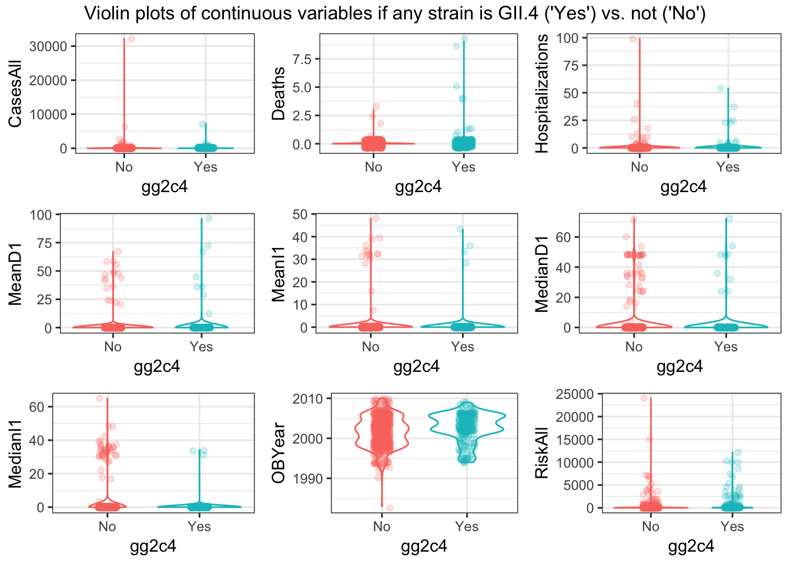

Variable Selection Analysis
Ellen Cheng
2019-10-27
Overview
This document will guide you through some data analysis tasks with a focus on performing variable selection. For this exercise, we consider a categorical outcome.
While this is in some sense a stand-alone analysis, I assume that you have worked through the Data Analysis exercise and are familiar with the dataset and all the things we discovered during the cleaning process. We’ll use the same dataset here but focus on a different outcome. Other than that, the way to work through the exercise is like in the Data Analysis exercise, namely by writing/completing the missing code.
Project setup
We need a variety of different packages, which are loaded here. Install as needed. If you use others, load them here.
library('tidyverse')
library('visdat')
library('ggridges')
library('gridExtra')
library('ggplotify') # to create grobs
library('tidyr')
library('dplyr')
library('forcats')
library('ggplot2')
library('knitr')
library('mlr') #for model fitting.
library('parallelMap') #for using multiple processors when running models through mlrData loading and cleaning
We will again use the Norovirus dataset.
Looking at the outcome
For this analysis, our main outcome of interest is if an outbreak was caused by the G2.4 strain of norovirus or not, and how other factors might be correlated with that strain.
## chr [1:1022] "Yes" "" "Yes" "" "Yes" "" "" "" "Yes" "" "" "" "" "" "" ...## [1] "Yes" ""##
## Yes
## 716 306Overall, it looks ok, a decent amount in each category (i.e. no unbalanced data). However, we see an odd coding, there are only 2 types of entries, either “Yes” or "“, i.e. an empty space. The codebook tells us that this is how things were coded, if it was G2.4 it got a”Yes“, if it wasn’t it did get an empty space instead of a”No“. That’s somewhat strange and while the analysis should work, it is better to re-code the empty slots with”No".
data_raw$gg2c4[data_raw$gg2c4==""] <- "No"
table(data_raw$gg2c4) # Okay, all blanks have been changed to "No" now##
## No Yes
## 716 306Selecting predictors
We will pick similar variables as previously, with some adjustments based on what we learned before. Keep the following variables: Action1, CasesAll, Country, Deaths, GG2C4, Hemisphere, Hospitalizations, MeanD1, MeanI1, MedianD1, MedianI1, OBYear, Path1, RiskAll, Season, Setting, Trans1, Vomit.
d <- data_raw %>% dplyr::select(Action1, CasesAll, Country, Deaths, gg2c4, Hemisphere, Hospitalizations, MeanD1, MeanI1, MedianD1, MedianI1, OBYear, Path1, RiskAll, season, Setting_1, Trans1, Vomit)
dim(d) # 1022 18## [1] 1022 18## Observations: 1,022
## Variables: 18
## $ Action1 <chr> "Unspecified", "Unspecified", "Unspecified", "U…
## $ CasesAll <int> 15, 65, 27, 4, 15, 6, 40, 10, 116, 45, 184, 191…
## $ Country <chr> "Japan", "USA", "Other", "Other", "Other", "Oth…
## $ Deaths <int> 0, 0, 0, 0, 0, 0, 0, 0, 0, 0, 0, 0, 0, 0, 0, 0,…
## $ gg2c4 <chr> "Yes", "No", "Yes", "No", "Yes", "No", "No", "N…
## $ Hemisphere <chr> "Northern", "Northern", "Northern", "Northern",…
## $ Hospitalizations <int> 0, 0, 0, 0, 0, 0, 0, 0, 5, 10, 3, 0, 0, 0, 0, 0…
## $ MeanD1 <dbl> 0, 0, 0, 0, 0, 0, 0, 0, 0, 0, 0, 0, 24, 0, 0, 0…
## $ MeanI1 <int> 0, 0, 0, 0, 0, 0, 0, 0, 0, 0, 0, 0, 0, 0, 0, 0,…
## $ MedianD1 <dbl> 0, 36, 0, 0, 0, 0, 0, 0, 0, 48, 37, 24, 0, 0, 0…
## $ MedianI1 <int> 0, 37, 0, 0, 0, 0, 0, 0, 0, 31, 34, 33, 0, 0, 0…
## $ OBYear <chr> "1999", "1998", "2006", "2006", "2006", "2006",…
## $ Path1 <chr> "No", "No", "Unspecified", "Unspecified", "Unsp…
## $ RiskAll <dbl> 0.00000, 108.00000, 130.00000, 4.00000, 25.0000…
## $ season <chr> "Fall", "Fall", "Fall", "Fall", "Fall", "Fall",…
## $ Setting_1 <chr> "Daycare Center", "Boxed lunch, football game",…
## $ Trans1 <chr> "Unspecified", "Foodborne", "Foodborne", "Foodb…
## $ Vomit <int> 1, 1, 1, 1, 1, 1, 1, 1, 1, 1, 1, 1, 1, 1, 1, 1,…Cleaning predictors
We’ll likely have to perform similar cleaning steps as before. A difference is that earlier we had to drop about half of the observations because no outcome was available. Here, we have outcome for every outbreak. Thus, there is more data to clean, which - as we will see - introduces a few issues we didn’t have before, since we dropped the troublesome observations early in the process.
Let’s first check for missing values.
## [1] 214There are 214 missing values. RiskAll has the most missing values (11.74%). Deaths, Hospitalizations, CasesAll, and Vomit also have a small number of missing values.
Looks like we have again some missing in Hospitalization and Deaths, and some more in RiskAll. Since the missing is not excessive, and to make our life easier, we’ll drop them for now. Note however the ‘blocks’ of missing values for RiskAll. Given that these outbreaks should be entered fairly randomly into the spreadsheet, it is strange to see the NA show up in such blocks. For a real data analysis, it would be worth looking closer and checking why there is a clustering like that.
Let’s make sure everything has the right format (numeric/integer/factor). Adjust/recode variables as needed. You will likely find that as you convert OBYear to numeric, something doesn’t quite work. Take a look. Fix by removing the observation with the troublesome entry, then convert to numeric. Finally, remove the observations that have 0 as OByear - there are more than 1 now.
## Observations: 858
## Variables: 18
## $ Action1 <chr> "Unspecified", "Unspecified", "Unspecified", "U…
## $ CasesAll <int> 15, 65, 27, 4, 15, 6, 40, 10, 116, 45, 184, 191…
## $ Country <chr> "Japan", "USA", "Other", "Other", "Other", "Oth…
## $ Deaths <int> 0, 0, 0, 0, 0, 0, 0, 0, 0, 0, 0, 0, 0, 0, 0, 0,…
## $ gg2c4 <chr> "Yes", "No", "Yes", "No", "Yes", "No", "No", "N…
## $ Hemisphere <chr> "Northern", "Northern", "Northern", "Northern",…
## $ Hospitalizations <int> 0, 0, 0, 0, 0, 0, 0, 0, 5, 10, 3, 0, 0, 0, 0, 0…
## $ MeanD1 <dbl> 0, 0, 0, 0, 0, 0, 0, 0, 0, 0, 0, 0, 24, 0, 0, 0…
## $ MeanI1 <int> 0, 0, 0, 0, 0, 0, 0, 0, 0, 0, 0, 0, 0, 0, 0, 0,…
## $ MedianD1 <dbl> 0, 36, 0, 0, 0, 0, 0, 0, 0, 48, 37, 24, 0, 0, 0…
## $ MedianI1 <int> 0, 37, 0, 0, 0, 0, 0, 0, 0, 31, 34, 33, 0, 0, 0…
## $ OBYear <chr> "1999", "1998", "2006", "2006", "2006", "2006",…
## $ Path1 <chr> "No", "No", "Unspecified", "Unspecified", "Unsp…
## $ RiskAll <dbl> 0.00000, 108.00000, 130.00000, 4.00000, 25.0000…
## $ season <chr> "Fall", "Fall", "Fall", "Fall", "Fall", "Fall",…
## $ Setting_1 <chr> "Daycare Center", "Boxed lunch, football game",…
## $ Trans1 <chr> "Unspecified", "Foodborne", "Foodborne", "Foodb…
## $ Vomit <int> 1, 1, 1, 1, 1, 1, 1, 1, 1, 1, 1, 1, 1, 1, 1, 1,…## [1] "1999" "1998" "2006" "2004" "1993" "2002" "2005" "2003" "1994" "2008"
## [11] "2000" "2001" "1997" "1995" "1996" "2007" "2009" "1990" "0" "1983"
## [21] "2010" "1992"## [1] "1999" "1998" "2006" "2004" "1993" "2002" "2005" "2003" "1994" "2008"
## [11] "2000" "2001" "1997" "1995" "1996" "2007" "2009" "1990" "1983" "2010"
## [21] "1992"## Observations: 852
## Variables: 18
## $ Action1 <fct> Unspecified, Unspecified, Unspecified, Unspecif…
## $ CasesAll <int> 15, 65, 27, 4, 15, 6, 40, 10, 116, 45, 184, 191…
## $ Country <fct> Japan, USA, Other, Other, Other, Other, Other, …
## $ Deaths <int> 0, 0, 0, 0, 0, 0, 0, 0, 0, 0, 0, 0, 0, 0, 0, 0,…
## $ gg2c4 <fct> Yes, No, Yes, No, Yes, No, No, No, Yes, No, No,…
## $ Hemisphere <fct> Northern, Northern, Northern, Northern, Norther…
## $ Hospitalizations <int> 0, 0, 0, 0, 0, 0, 0, 0, 5, 10, 3, 0, 0, 0, 0, 0…
## $ MeanD1 <dbl> 0, 0, 0, 0, 0, 0, 0, 0, 0, 0, 0, 0, 24, 0, 0, 0…
## $ MeanI1 <int> 0, 0, 0, 0, 0, 0, 0, 0, 0, 0, 0, 0, 0, 0, 0, 0,…
## $ MedianD1 <dbl> 0, 36, 0, 0, 0, 0, 0, 0, 0, 48, 37, 24, 0, 0, 0…
## $ MedianI1 <int> 0, 37, 0, 0, 0, 0, 0, 0, 0, 31, 34, 33, 0, 0, 0…
## $ OBYear <int> 1999, 1998, 2006, 2006, 2006, 2006, 2006, 2006,…
## $ Path1 <fct> No, No, Unspecified, Unspecified, Unspecified, …
## $ RiskAll <dbl> 0.00000, 108.00000, 130.00000, 4.00000, 25.0000…
## $ season <fct> Fall, Fall, Fall, Fall, Fall, Fall, Fall, Fall,…
## $ Setting_1 <fct> "Daycare Center", "Boxed lunch, football game",…
## $ Trans1 <fct> Unspecified, Foodborne, Foodborne, Foodborne, F…
## $ Vomit <int> 1, 1, 1, 1, 1, 1, 1, 1, 1, 1, 1, 1, 1, 1, 1, 1,…d <- droplevels(d)
(d$MeanD1) # I'm not sure why this is class dbl. Looks like all the numbers are integers. When there is a decimal, it's a zero after the decimal. But also seems odd that the means are always integers. I'll leave it as class dbl. Same for MedianD1.## [1] 0.0 0.0 0.0 0.0 0.0 0.0 0.0 0.0 0.0 0.0 0.0 0.0 24.0 0.0
## [15] 0.0 0.0 0.0 0.0 0.0 0.0 0.0 0.0 0.0 0.0 0.0 0.0 0.0 0.0
## [29] 0.0 0.0 0.0 0.0 47.0 0.0 0.0 0.0 0.0 0.0 0.0 0.0 0.0 0.0
## [43] 43.0 48.0 0.0 0.0 0.0 0.0 0.0 0.0 0.0 0.0 0.0 0.0 0.0 0.0
## [57] 0.0 0.0 0.0 0.0 0.0 0.0 0.0 0.0 0.0 0.0 0.0 0.0 0.0 0.0
## [71] 0.0 0.0 0.0 0.0 0.0 0.0 0.0 0.0 0.0 0.0 0.0 0.0 0.0 0.0
## [85] 0.0 0.0 0.0 0.0 0.0 0.0 48.0 24.0 0.0 0.0 0.0 0.0 0.0 0.0
## [99] 0.0 0.0 0.0 0.0 0.0 0.0 0.0 0.0 0.0 0.0 0.0 0.0 0.0 0.0
## [113] 0.0 0.0 0.0 0.0 0.0 0.0 0.0 21.0 58.0 0.0 0.0 0.0 0.0 0.0
## [127] 0.0 0.0 0.0 0.0 22.0 0.0 35.0 72.0 0.0 0.0 0.0 0.0 0.0 0.0
## [141] 0.0 0.0 0.0 0.0 0.0 0.0 0.0 0.0 0.0 0.0 0.0 0.0 0.0 0.0
## [155] 0.0 0.0 0.0 0.0 0.0 0.0 0.0 0.0 0.0 0.0 0.0 12.0 0.0 0.0
## [169] 0.0 0.0 0.0 0.0 0.0 0.0 0.0 0.0 0.0 0.0 0.0 0.0 0.0 0.0
## [183] 0.0 0.0 0.0 0.0 0.0 0.0 0.0 0.0 0.0 0.0 0.0 0.0 0.0 0.0
## [197] 0.0 0.0 0.0 0.0 0.0 0.0 0.0 0.0 0.0 0.0 0.0 0.0 0.0 0.0
## [211] 67.0 0.0 0.0 0.0 0.0 0.0 0.0 0.0 0.0 0.0 0.0 0.0 0.0 0.0
## [225] 0.0 0.0 0.0 0.0 0.0 0.0 0.0 0.0 0.0 0.0 0.0 0.0 0.0 0.0
## [239] 0.0 0.0 0.0 0.0 0.0 0.0 0.0 0.0 0.0 0.0 0.0 0.0 0.0 0.0
## [253] 0.0 0.0 0.0 0.0 0.0 0.0 0.0 0.0 0.0 0.0 0.0 0.0 0.0 0.0
## [267] 0.0 0.0 0.0 0.0 0.0 0.0 0.0 0.0 0.0 0.0 0.0 0.0 0.0 0.0
## [281] 0.0 0.0 0.0 0.0 0.0 0.0 0.0 0.0 0.0 0.0 0.0 0.0 0.0 0.0
## [295] 0.0 0.0 0.0 0.0 0.0 0.0 0.0 0.0 0.0 0.0 0.0 0.0 0.0 0.0
## [309] 0.0 0.0 0.0 0.0 0.0 0.0 0.0 0.0 0.0 0.0 0.0 0.0 0.0 36.0
## [323] 0.0 0.0 0.0 0.0 0.0 0.0 0.0 0.0 0.0 0.0 0.0 0.0 0.0 0.0
## [337] 0.0 0.0 0.0 0.0 0.0 0.0 0.0 0.0 0.0 0.0 0.0 0.0 0.0 0.0
## [351] 0.0 0.0 0.0 0.0 0.0 0.0 0.0 0.0 0.0 0.0 0.0 0.0 0.0 0.0
## [365] 0.0 0.0 0.0 0.0 0.0 0.0 0.0 0.0 0.0 0.0 0.0 0.0 0.0 0.0
## [379] 0.0 0.0 0.0 0.0 49.0 0.0 55.2 0.0 0.0 0.0 0.0 0.0 0.0 0.0
## [393] 0.0 0.0 0.0 0.0 0.0 0.0 0.0 0.0 0.0 0.0 0.0 0.0 0.0 0.0
## [407] 0.0 0.0 0.0 0.0 37.0 44.0 0.0 0.0 0.0 0.0 0.0 0.0 0.0 0.0
## [421] 0.0 0.0 0.0 0.0 0.0 0.0 0.0 0.0 0.0 0.0 0.0 0.0 0.0 0.0
## [435] 0.0 0.0 0.0 0.0 0.0 0.0 0.0 0.0 0.0 0.0 0.0 0.0 0.0 0.0
## [449] 0.0 0.0 0.0 0.0 0.0 0.0 0.0 0.0 0.0 0.0 0.0 0.0 36.0 0.0
## [463] 0.0 0.0 0.0 0.0 0.0 0.0 0.0 0.0 0.0 0.0 0.0 0.0 0.0 0.0
## [477] 0.0 0.0 0.0 0.0 0.0 0.0 0.0 0.0 0.0 0.0 0.0 0.0 0.0 0.0
## [491] 0.0 0.0 0.0 0.0 0.0 0.0 0.0 0.0 0.0 0.0 0.0 0.0 0.0 0.0
## [505] 0.0 0.0 0.0 0.0 0.0 0.0 0.0 0.0 0.0 0.0 0.0 0.0 0.0 0.0
## [519] 0.0 0.0 0.0 0.0 0.0 0.0 0.0 0.0 0.0 0.0 0.0 0.0 0.0 0.0
## [533] 0.0 0.0 0.0 0.0 0.0 0.0 0.0 0.0 0.0 0.0 0.0 0.0 0.0 0.0
## [547] 0.0 0.0 0.0 0.0 0.0 0.0 0.0 0.0 0.0 0.0 0.0 0.0 0.0 0.0
## [561] 0.0 0.0 0.0 0.0 0.0 0.0 0.0 0.0 0.0 0.0 0.0 0.0 0.0 0.0
## [575] 0.0 0.0 0.0 0.0 0.0 0.0 0.0 0.0 0.0 0.0 0.0 0.0 0.0 0.0
## [589] 0.0 0.0 0.0 0.0 0.0 41.0 0.0 0.0 0.0 0.0 0.0 0.0 0.0 0.0
## [603] 0.0 0.0 0.0 0.0 0.0 0.0 0.0 0.0 0.0 0.0 0.0 0.0 0.0 0.0
## [617] 0.0 0.0 0.0 0.0 0.0 0.0 0.0 0.0 0.0 0.0 0.0 0.0 0.0 0.0
## [631] 0.0 0.0 0.0 0.0 0.0 0.0 0.0 0.0 0.0 0.0 0.0 0.0 0.0 0.0
## [645] 0.0 0.0 0.0 0.0 0.0 0.0 0.0 0.0 0.0 0.0 0.0 0.0 0.0 0.0
## [659] 0.0 0.0 0.0 0.0 0.0 0.0 0.0 0.0 0.0 0.0 0.0 0.0 0.0 0.0
## [673] 0.0 0.0 0.0 0.0 0.0 0.0 0.0 0.0 0.0 0.0 0.0 0.0 0.0 0.0
## [687] 0.0 0.0 0.0 0.0 0.0 0.0 0.0 0.0 0.0 0.0 0.0 0.0 0.0 0.0
## [701] 0.0 0.0 0.0 0.0 0.0 0.0 0.0 0.0 0.0 0.0 0.0 0.0 0.0 0.0
## [715] 0.0 0.0 0.0 0.0 0.0 0.0 0.0 0.0 0.0 0.0 0.0 0.0 0.0 0.0
## [729] 0.0 0.0 0.0 0.0 0.0 0.0 0.0 0.0 0.0 0.0 0.0 0.0 0.0 0.0
## [743] 0.0 0.0 0.0 0.0 0.0 0.0 0.0 0.0 0.0 0.0 0.0 0.0 0.0 0.0
## [757] 0.0 0.0 0.0 0.0 0.0 0.0 0.0 0.0 0.0 0.0 0.0 0.0 0.0 0.0
## [771] 0.0 0.0 0.0 0.0 0.0 0.0 0.0 0.0 0.0 0.0 0.0 0.0 0.0 96.0
## [785] 45.0 0.0 0.0 67.0 58.0 29.0 0.0 0.0 0.0 0.0 0.0 0.0 0.0 0.0
## [799] 0.0 0.0 0.0 0.0 0.0 0.0 0.0 0.0 0.0 0.0 0.0 0.0 0.0 0.0
## [813] 0.0 0.0 0.0 0.0 0.0 0.0 0.0 0.0 0.0 0.0 0.0 0.0 0.0 0.0
## [827] 0.0 0.0 0.0 0.0 0.0 0.0 0.0 0.0 0.0 0.0 0.0 0.0 0.0 0.0
## [841] 0.0 0.0 0.0 0.0 0.0 0.0 0.0 0.0 0.0 0.0 0.0 0.0Next, we remove the Unspecified entry in Hemisphere and recode Action1 and Path1 as described in the Data Analysis script, i.e. from Unknown to Unspecified. Also do the same grouping into just Restaurant and Other with the Setting_1 variable. Again, remember that there are restaurant and Restaurant values, so you need to fix that too.
# Drop records with 'Unspecified' for 'Hemisphere'
d <- d %>%
filter(Hemisphere != "Unspecified")
table(d$Hemisphere)##
## Northern Southern Unspecified
## 798 53 0# Combine 'Unknown' and 'Unspecified'
d$Action1[d$Action1 == "Unknown"] <- "Unspecified"
d$Path1[d$Path1 == "Unknown"] <- "Unspecified"
d <- droplevels(d)
table(d$Hemisphere)##
## Northern Southern
## 798 53##
## No Unspecified Yes
## 1 678 172##
## No Unspecified Yes
## 196 615 40# Reclassify 'Setting_1'
# levels(d$Setting_1) # I commented this out after looking at it, because it would take too much space in the output
(c("Sub Restaruant", "Resaurant", levels(d$Setting_1)[grep("restaurant", levels(d$Setting_1), ignore.case = TRUE)])) # These are the 12 categories that can be considered "Restaurant"## [1] "Sub Restaruant"
## [2] "Resaurant"
## [3] "annual festival, oyster roast, banquet, restaurant, church supper"
## [4] "Catering service in Restaurant"
## [5] "restaurant"
## [6] "Restaurant"
## [7] "restaurant in Cabarrus county"
## [8] "restaurant in Clay county"
## [9] "restaurant in Northern Territory"
## [10] "restaurants, sports and community clubs, and a private function"
## [11] "Shared meal at a restaurant"
## [12] "take-out restaurant"d2 <- d %>%
mutate(Setting_1 = ifelse(Setting_1 %in% c("Sub Restaruant", "Resaurant", levels(d$Setting_1)[grep("restaurant", levels(d$Setting_1), ignore.case = TRUE)]), "Restaurant", "Other"))
table(d2$Setting_1) #172 Restaurant, 679 Other##
## Other Restaurant
## 679 172## [1] "Other" "Restaurant"There is only one entry of “No” for the ‘Action1’ variable. All other entries are “Unspecified” or “Yes”. We will probably have to fix that later.
These were the entries in ‘Setting_1’ that I reclassified as “Restaurant”. All other entries were reclassified as “Other”. Now there are 172 “Restaurant” and 679 “Other”.
Data visualization
Next, let’s create a few plots showing the outcome and the predictors. For the continuous predictors, I suggest scatter/box/violinplots with the outcome on the x-axis.
# Check the distribution of continuous predictors. I'll try out ridge plots. Remember, the outcome is 'gg2c4'
(numeric_var <- select_if(d2, is.numeric) %>% names()) # These are the numeric variables## [1] "CasesAll" "Deaths" "Hospitalizations"
## [4] "MeanD1" "MeanI1" "MedianD1"
## [7] "MedianI1" "OBYear" "RiskAll"ridge_list <- list()
for(i in numeric_var) {
ridge_list[[i]] <- ggplot(data = d2[, c("gg2c4", i)], aes_string(x = i, y = "gg2c4", color = "gg2c4", fill = "gg2c4")) +
geom_density_ridges(alpha = 0.4) +
labs(x = i) +
theme_bw() +
theme(legend.position = "none")
}
do.call("grid.arrange", c(ridge_list, ncol=3, top = "Distribution of continuous variables if any strain is GII.4 ('Yes') vs. not ('No')"))# Box plots of continuous predictors
box_list <- list()
for(i in numeric_var) {
box_list[[i]] <- ggplot(data = d2[, c("gg2c4", i)], aes_string(y = i, x = "gg2c4", color = "gg2c4")) +
geom_boxplot() +
labs(y = i) +
theme_bw() +
theme(legend.position = "none")
}
do.call("grid.arrange", c(box_list, ncol=3, top = "Box plots of continuous variables if any strain is GII.4 ('Yes') vs. not ('No')"))
# Violin plots of continuous predictors
violin_list <- list()
for(i in numeric_var) {
violin_list[[i]] <- ggplot(data = d2[, c("gg2c4", i)], aes_string(y = i, x = "gg2c4", color = "gg2c4")) +
geom_violin() +
geom_jitter(alpha = 0.2, width = 0.1) +
labs(y = i) +
theme_bw() +
theme(legend.position = "none")
}
do.call("grid.arrange", c(violin_list, ncol=3, top = "Violin plots of continuous variables if any strain is GII.4 ('Yes') vs. not ('No')"))
For every continuous predictor, the distribution of values seems pretty similar for records with gg2c4 = “Yes” vs. “No” (see histograms). The only predictor that seems to show much difference is OBYear–values are higher for “Yes” records of ‘gg2c4’ (see box/violin plots)
Things look ok, apart from the skew in the predictors we discussed previously.
Next, let’s create plots for the categorical variabless. You can use for instance geom_count for it, or some other representation. If you prefer lots of tables, that’s ok too.
## [1] "Action1" "Country" "gg2c4" "Hemisphere" "Path1"
## [6] "season" "Setting_1" "Trans1" "Vomit"categ_var <- categ_var[categ_var != "gg2c4"]
# Tables and mosaic plots of categorical predictors
for(i in categ_var) {
tab <- tableGrob(table(d2[[i]], d2[["gg2c4"]]), theme=ttheme_minimal(base_size = 10))
plot <- as.grob(~mosaicplot(table(d2[["gg2c4"]], d2[[i]]), xlab = "gg2c4", ylab = i, color = TRUE, las = 2, main = NULL)) # double brackets makes it a vector instead of a data frame
print(grid.arrange(tab, plot, nrow = 2, heights = c(1, 3), top = paste0("Table of counts and mosaic plot for ", toupper(i))))
}## TableGrob (3 x 1) "arrange": 3 grobs
## z cells name grob
## 1 1 (2-2,1-1) arrange gtable[rowhead-fg]
## 2 2 (3-3,1-1) arrange gTree[GRID.gTree.2571]
## 3 3 (1-1,1-1) arrange text[GRID.text.2572]## TableGrob (3 x 1) "arrange": 3 grobs
## z cells name grob
## 1 1 (2-2,1-1) arrange gtable[rowhead-fg]
## 2 2 (3-3,1-1) arrange gTree[GRID.gTree.2609]
## 3 3 (1-1,1-1) arrange text[GRID.text.2610]## TableGrob (3 x 1) "arrange": 3 grobs
## z cells name grob
## 1 1 (2-2,1-1) arrange gtable[rowhead-fg]
## 2 2 (3-3,1-1) arrange gTree[GRID.gTree.2629]
## 3 3 (1-1,1-1) arrange text[GRID.text.2630]## TableGrob (3 x 1) "arrange": 3 grobs
## z cells name grob
## 1 1 (2-2,1-1) arrange gtable[rowhead-fg]
## 2 2 (3-3,1-1) arrange gTree[GRID.gTree.2655]
## 3 3 (1-1,1-1) arrange text[GRID.text.2656]## TableGrob (3 x 1) "arrange": 3 grobs
## z cells name grob
## 1 1 (2-2,1-1) arrange gtable[rowhead-fg]
## 2 2 (3-3,1-1) arrange gTree[GRID.gTree.2693]
## 3 3 (1-1,1-1) arrange text[GRID.text.2694]## TableGrob (3 x 1) "arrange": 3 grobs
## z cells name grob
## 1 1 (2-2,1-1) arrange gtable[rowhead-fg]
## 2 2 (3-3,1-1) arrange gTree[GRID.gTree.2713]
## 3 3 (1-1,1-1) arrange text[GRID.text.2714]## TableGrob (3 x 1) "arrange": 3 grobs
## z cells name grob
## 1 1 (2-2,1-1) arrange gtable[rowhead-fg]
## 2 2 (3-3,1-1) arrange gTree[GRID.gTree.2757]
## 3 3 (1-1,1-1) arrange text[GRID.text.2758]## TableGrob (3 x 1) "arrange": 3 grobs
## z cells name grob
## 1 1 (2-2,1-1) arrange gtable[rowhead-fg]
## 2 2 (3-3,1-1) arrange gTree[GRID.gTree.2777]
## 3 3 (1-1,1-1) arrange text[GRID.text.2778]Potential problems with these predictors:
TRANS1: Only 11 records in the “Environmental” category
COUNTRY: Only 1 record for Country = “Unspecified” and gg2c4 = “No”
- ACTION1: Only 1 record for Action = “No”
You should see from plots or tables that some of the categories are small, e.g. for Action1, the “No” category is very small. Very few entries for a given factor create problems during cross-validation (since we can’t have a level show up in the holdout if it wasn’t part of the fitting set). So let’s look at those factor variables a bit closer and fix as needed.
# See the code above for tables of counts--commenting it out below just because it was already in previous chunk, so no need to take up space by repeating output
# tab <- tableGrob(table(d2[[i]], d2[["gg2c4"]]), theme=ttheme_minimal(base_size = 10)) You should see from your explorations above that there is only a single entry for No in Action1, and small entries for Multiple and Unspecified in Country and Environmental in Trans1. The single No should be fixed, the other somewhat small groupings might be ok. It depends on scientific rationale and method of analysis if you should modify/group those or not. We’ll do that.
Change things as follows: Remove the observation for which action is No, combine Countries into 3 groups Japan/USA/Other, and since I don’t even know what biologically the difference is between Environmental and Waterborne transmission (seems the same route to me based on my norovirus knowledge), we’ll move the Waterborne into the environmental. Finally, I noticed there is a blank category for season. That likely means it wasn’t stated in the paper. Let’s recode that as Unknown. Finally, re-order data such that the outcome is the first column and again remove empty factor levels. Then look at your resulting data frame.
# Remove the observation for which action is _No_
d3 <- d2 %>%
filter(Action1 != "No")
# Combine Countries into 3 groups Japan/USA/Other
d3$Country[d3$Country == "Multiple"] <- "Other"
d3$Country[d3$Country == "Unspecified"] <- "Other"
# Move the Waterborne into the environmental transmission
d3$Trans1[d3$Trans1=="Waterborne"] <- "Environmental"
# There is a blank category for season--recode as _Unknown_
table(d3$season) # check initial counts so can make sure I don't screw up##
## Fall Spring Summer Winter
## 55 135 187 103 370# Fall Spring Summer Winter
# 55 135 187 103 370
levels(d3$season)[levels(d3$season) == ""] <- "Unknown"
table(d3$season) # it worked!##
## Unknown Fall Spring Summer Winter
## 55 135 187 103 370# Re-order data so the outcome is the first column
d4 <- d3 %>%
select(gg2c4, everything())
# Remove empty factor levels
d4 <- droplevels(d4)
# Look at resulting data frame
glimpse(d4)## Observations: 850
## Variables: 18
## $ gg2c4 <fct> Yes, No, Yes, No, Yes, No, No, No, Yes, No, No,…
## $ Action1 <fct> Unspecified, Unspecified, Unspecified, Unspecif…
## $ CasesAll <int> 15, 65, 27, 4, 15, 6, 40, 10, 116, 45, 184, 191…
## $ Country <fct> Japan, USA, Other, Other, Other, Other, Other, …
## $ Deaths <int> 0, 0, 0, 0, 0, 0, 0, 0, 0, 0, 0, 0, 0, 0, 0, 0,…
## $ Hemisphere <fct> Northern, Northern, Northern, Northern, Norther…
## $ Hospitalizations <int> 0, 0, 0, 0, 0, 0, 0, 0, 5, 10, 3, 0, 0, 0, 0, 0…
## $ MeanD1 <dbl> 0, 0, 0, 0, 0, 0, 0, 0, 0, 0, 0, 0, 24, 0, 0, 0…
## $ MeanI1 <int> 0, 0, 0, 0, 0, 0, 0, 0, 0, 0, 0, 0, 0, 0, 0, 0,…
## $ MedianD1 <dbl> 0, 36, 0, 0, 0, 0, 0, 0, 0, 48, 37, 24, 0, 0, 0…
## $ MedianI1 <int> 0, 37, 0, 0, 0, 0, 0, 0, 0, 31, 34, 33, 0, 0, 0…
## $ OBYear <int> 1999, 1998, 2006, 2006, 2006, 2006, 2006, 2006,…
## $ Path1 <fct> No, No, Unspecified, Unspecified, Unspecified, …
## $ RiskAll <dbl> 0.00000, 108.00000, 130.00000, 4.00000, 25.0000…
## $ season <fct> Fall, Fall, Fall, Fall, Fall, Fall, Fall, Fall,…
## $ Setting_1 <fct> Other, Other, Other, Restaurant, Other, Restaur…
## $ Trans1 <fct> Unspecified, Foodborne, Foodborne, Foodborne, F…
## $ Vomit <fct> 1, 1, 1, 1, 1, 1, 1, 1, 1, 1, 1, 1, 1, 1, 1, 1,…##
## Unspecified Yes
## 678 172## [1] "Unspecified" "Yes"##
## Japan Other USA
## 316 436 98## [1] "Japan" "Other" "USA"##
## Environmental Foodborne Person to Person Unknown
## 72 338 119 61
## Unspecified
## 260## [1] "Environmental" "Foodborne" "Person to Person"
## [4] "Unknown" "Unspecified"##
## Unknown Fall Spring Summer Winter
## 55 135 187 103 370## [1] "Unknown" "Fall" "Spring" "Summer" "Winter"## [1] 850 18
Seems odd that we have both “Unknown” and “Unspecified” as categories for Transmission. It’s unclear to me how they differ. The codebook also seems to have different information about the values for this variable–the codebook says “Choose from: Foodborne, Waterborne, Person to Person, Environmental, Other, NA (not applicable). Select NA(not applicable) if transmission type was not specified.”
At this step, you should have a dataframe containing 850 observations, and 18 variables: 1 outcome, 9 numeric/integer predictors, and 8 factor variables. There should be no missing values. The outcome, gg2c4, should be in the 1st slot.
Data splitting
We could do data splitting again as we did in the previous exercise, to have a final test set. But since you saw how it works in the previous exercise, we skip it here. We use the full data to fit to our models. We’ll still use cross-validation to get a more honest estimate of model performance. For a real data analysis, the choice to keep some for a final test or not is based on your goals. If your focus is predictive performance, you should consider this split. If your focus is inference or exploratory analysis, you might want to skip this.
Model fitting
So I had planned to use caret exclusivley for this course. Last time I tried feature/subset selection with caret, I found it buggy and not too well documented. I had hoped this had improved since. Unortunately, I was again not really able to get things to work. So even though I said we likely won’t use the mlr package, I decided that to be able to nicely practice feature/subset selection, we need to do so. It’s not a bad idea to get familiar with that package, at times caret can do things mlr can’t do and the reverse. So knowing how to use both is good. We’ll thus use mlr to do our model fitting in this exercise.
Parallelization
mlr allows you to run things in parallel by using multiple cores (caret does too). For instance, if you do 5x cross-validation 5x repeated, you essentially run a very similar piece of code 25 times. Normally, you would run one at a time. But if you have it on a machine with 25 cores, all those 25 could run at the same time, giving you a speed-up of 25 (or close to, there is usually some overhead related to doing things in parallel). This kind of parallel computing is sometimes called embarassingly parallel, because it’s so embarassingly simple to split the task into parallel streams.
Since doing the subset selection below starts getting slow, and because it’s a good topic to know about, we are going to use parallelization here. mlr uses the package parallelMap for this. All you need to do is specify the number of cores/processors you want to use and start the parallel system, and mlr then automatically does things in parallel if feasible.
#set the number of cores you want to use. Note that this is actually the number of 'logical processors', which is 2x the number of cores. On a windows machine, the number of cores/logical processors can be found in the task manager. You should only set it to what your computer has (or less). So if your computer has say 4 or 6 cores, you can set it to that, or some lower number. Setting it to a number higher than the cores your computer has doesn't further speed up things, in fact it slows things down.
parallel::detectCores() # I have 4 cores, so will use all## [1] 4Setup
Some setup settings that are used in various code chunks below.
finaldat <- d4 # rename to keep track of my final dataset
outcome <- finaldat$gg2c4
outcomename = "gg2c4"
predictors <- finaldat[,-1]
npred=ncol(predictors)
#set sampling method for performance evaluation
#here, we use 5-fold cross-validation, 5-times repeated
sampling_choice = makeResampleDesc("RepCV", reps = 5, folds = 5) # this is from package 'mlr'. "RepCV" is repeated cross-validation.A null model
To define a null model, we need to determine what performance measure we want to track. As mentioned in the course materials, there are different performance measures. Accuracy or misclassification error is simple, it just counts the number of times the model got it right/wrong. We’ll start with that one, and then try another one later. mlr allows for a lot of different performance measures for both categorical and continuous outcomes, see here and here.
For accuracy, the simplest null model always predicts the most frequent category. We can use that as baseline performance.
#write code that computes accuracy for a null model
summary(mod_null <- glm(gg2c4 ~ 1, family = binomial(link = "logit"), data = finaldat)) # I think we're being asked to do a null model for the logistic regression?##
## Call:
## glm(formula = gg2c4 ~ 1, family = binomial(link = "logit"), data = finaldat)
##
## Deviance Residuals:
## Min 1Q Median 3Q Max
## -0.8526 -0.8526 -0.8526 1.5417 1.5417
##
## Coefficients:
## Estimate Std. Error z value Pr(>|z|)
## (Intercept) -0.82499 0.07452 -11.07 <2e-16 ***
## ---
## Signif. codes: 0 '***' 0.001 '**' 0.01 '*' 0.05 '.' 0.1 ' ' 1
##
## (Dispersion parameter for binomial family taken to be 1)
##
## Null deviance: 1045.2 on 849 degrees of freedom
## Residual deviance: 1045.2 on 849 degrees of freedom
## AIC: 1047.2
##
## Number of Fisher Scoring iterations: 4predict_null_resp <- predict(mod_null, type = "response")
predict_null <- ifelse(predict_null_resp < 0.5, "No", "Yes") # so this is all "No", as it should be
(accur <- mean(outcome == predict_null)) # Can manually calculate it this way...accuracy is 0.69## [1] 0.6952941You should find that the null model has an accuracy of around 0.69.
Single predictor models
Now let’s consider single predictor models, i.e. we’ll fit the outcome to each predictor one at a time to get an idea of the importance of individual predictors. To evaluate our model performance, we will use cross-validation. Since our outcome is categorical, we’ll use a logistic model.
set.seed(1111) #makes each code block reproducible
#set learner/model. this corresponds to a logistic model.
#mlr calls different models different "learners"
learner_name = "classif.binomial";
mylearner = makeLearner(learner_name, predict.type = "prob")
# this will contain the results
unifmat=data.frame(variable = rep(0,npred), Accuracy = rep(0,npred))
# loop over each predictor, build simple dataset with just outcome and that predictor, fit it to a glm/logistic model. One row per predictor.
for (nn in 1:npred) # for each predictor
{
unidata = data.frame(gg2c4 = outcome, finaldat[,nn+1] ) # this is a dataframe with first column = the outcome and second column is the values for that predictor
## Generate the task, i.e. define outcome and predictors to be fit
mytask = makeClassifTask(id='unianalysis', data = unidata, target = outcomename, positive = "Yes") # the 'positive' argument says that the response gg2c4="Yes" is the one to count as the positive class for binary classification
model = mlr::resample(mylearner, task = mytask, resampling = sampling_choice, show.info = FALSE, measures = acc )
unifmat[nn,1] = names(predictors)[nn]
unifmat[nn,2] = model$aggr
}
kable(unifmat)| variable | Accuracy |
|---|---|
| Action1 | 0.6952941 |
| CasesAll | 0.6943529 |
| Country | 0.6952941 |
| Deaths | 0.6974118 |
| Hemisphere | 0.6952941 |
| Hospitalizations | 0.6941176 |
| MeanD1 | 0.6952941 |
| MeanI1 | 0.6952941 |
| MedianD1 | 0.6952941 |
| MedianI1 | 0.6952941 |
| OBYear | 0.6943529 |
| Path1 | 0.6903529 |
| RiskAll | 0.6948235 |
| season | 0.6952941 |
| Setting_1 | 0.6952941 |
| Trans1 | 0.6952941 |
| Vomit | 0.6952941 |
So looks like none of the single predictor models have a higher accuracy than the null. Maybe surprising. We’ll get back to that below.
Full model
Now let’s fit a full logistic model with all predictors.
set.seed(1111) #makes each code block reproducible
#do full model with Cross-Validation - to get an idea for the amount of over-fitting a full model does
mytask = makeClassifTask(id='fullanalysis', data = finaldat, target = outcomename, positive = "Yes")
fullmodel = resample(mylearner, task = mytask, resampling = sampling_choice, show.info = FALSE, measures = acc )
ACC_fullmodel = fullmodel$aggr[1] # oh interesting! This is how you extract the accuracy from the results
print(ACC_fullmodel)## acc.test.mean
## 0.7115294So a very small improvement over the simple models.
Now let’s do subset selection. The code below does it several ways. It does regular forward and backward selection and floating versions of those. It also uses a genetic algorithm for selection. See the mlr website here for details.
Also note that I included a kind of timer in the code, to see how long things take. That’s a good idea if you run bigger models. You first run a few iterations on maybe a few cores, then you can compute how long it would take if you doubled the iterations, or doubled the cores, etc. This prevents bad surprises of trying to quickly run a piece of code and waiting hours. You should always use short runs to make sure everything works in principle, and only at the end do the real, long “production” runs. Otherwise you might waste hours/days/weeks waiting for results only to realize that you made a basic mistake and you have to do it all over.
set.seed(1111)
tstart=proc.time(); #capture current CPU time for timing how long things take
#do 2 forms of forward and backward selection, just to compare
select_methods=c("sbs","sfbs","sfs","sffs")
# sbs = Sequential Backward Search; sfs = Sequential Forward Search; sfbs = Sequential Floating Backward Search; sffs = Sequential Floating Forward Search
resmat=data.frame(method = rep(0,4), Accuracy = rep(0,4), Model = rep(0,4))
ct=1;
for (select_method in select_methods) #loop over all stepwise selection methods
{
ctrl = makeFeatSelControlSequential(method = select_method) # this has the control structures for feature selection. This one is deterministic forward or backward search.
print(sprintf('doing subset selection with method %s ',select_method))
sfeat_res = selectFeatures(learner = mylearner,
task = mytask,
resampling = sampling_choice,
control = ctrl,
show.info = FALSE,
measures = acc)
resmat[ct,1] = select_methods[ct]
resmat[ct,2] = sfeat_res$y
resmat[ct,3] = paste(as.vector(sfeat_res$x), collapse= ', ')
ct=ct+1;
}## [1] "doing subset selection with method sbs "
## [1] "doing subset selection with method sfbs "
## [1] "doing subset selection with method sfs "
## [1] "doing subset selection with method sffs "# do feature selection with genetic algorithm
maxit = 100 #number of iterations - should be large for 'production run'
ctrl_GA =makeFeatSelControlGA(maxit = maxit)
print(sprintf('doing subset selection with genetic algorithm'))## [1] "doing subset selection with genetic algorithm"sfeatga_res = selectFeatures(learner = mylearner,
task = mytask,
resampling = sampling_choice,
control = ctrl_GA,
show.info = FALSE,
measures = acc)
resmat[5,1] = "GA"
resmat[5,2] = sfeatga_res$y
resmat[5,3] = paste(as.vector(sfeatga_res$x), collapse= ', ')
runtime.minutes_SS=(proc.time()-tstart)[[3]]/60; #total time in minutes the optimization took
print(sprintf('subset selection took %f minutes',runtime.minutes_SS));## [1] "subset selection took 6.860133 minutes"| method | Accuracy | Model |
|---|---|---|
| sbs | 0.7218824 | Action1, Country, Deaths, Hemisphere, OBYear, RiskAll, season, Setting_1, Trans1, Vomit |
| sfbs | 0.7167059 | Action1, Country, Deaths, OBYear, Setting_1, Trans1, Vomit |
| sfs | 0.6952941 | |
| sffs | 0.6952941 | |
| GA | 0.7197647 | Action1, CasesAll, Country, Deaths, MedianI1, OBYear, RiskAll, season, Setting_1, Trans1, Vomit |
So we find that some of the sub-models perform somewhat better. Note that the different methods find different submodels and the forward selection method seems to fail (since none of the single-predictor models is better than the null, it stops there). Also note that the genetic algorithm was only allowed to run for a short time (the number if iterations is small). To get potentially better results, that should be increased to a larger number, e.g. 1000 or more. But this will take a longer time, unless you have many cores you can use when you parallelize.
Different performance measures
So far, we found that some of the sub-models provide a minor improvement over the simple null or single-predictor models or the full model. However, the improvement is not much.
We could try tweaking further, e.g. by pre-processing the predictors (which is a good idea to try, but we won’t do here) or testing a different model (which we’ll do below).
For now, I want to discuss performance measure a bit more. The problem is that logistic regression, as well as many (though not all) algorithms that are used for classification (predicting categorical outcomes) return probabilities for an outcome to belong to a certain category. Those are then turned into Yes/No predictions (in the case with 2 outcomes like we have here), based on some cut-off. By default, a probability value of 0.5 is chosen. If the model predicts that there is a 0.5 or greater probability of the outcome being “Yes”, it is scored as such in the prediction, otherwise as no. However, this 0.5 threshold is not always good. It could be that we might get a much better model if we use another threshold. There is a technique that scans over different thresholds and evaluates model performance for each threshold. This is generally called receiver operating curve. If this concept is new to you, check out this article on Wikipedia or this tutorial on the mlr website.
Using this approach, a model is evaluated based on the Area under the curve (AUC), with an AUC=0.5 meaning a model is not better than chance, and AUC=1 meaning a perfect model. Let’s re-do the analysis above, but replace accuracy with AUC.
Model performance with AUC
#write code that computes AUC for a null model
# measureAUC(probabilities, truth, negative, positive)
# probabilities = The predicted probabilities for the positive class as a numeric vector
# negative & positive = the names of these classes
# Using the null model from my prior R chunk
measureAUC(predict_null_resp, outcome, negative = "No", positive = "Yes")## [1] 0.5#the null model always predicts "No"
#the auc function in the pROC package is useful
#or you can use any other package/function you want to use to compute AUC/ROCYou should find that the null model has an AUC of 0.5, as expected for a “no information” model.
Now we run the single-predictor models again.
#copy and paste the code from above for single predictor fits, but now switch to AUC instead of accuracy.
set.seed(1111) #makes each code block reproducible
#set learner/model. this corresponds to a logistic model.
#mlr calls different models different "learners"
learner_name = "classif.binomial";
mylearner = makeLearner(learner_name, predict.type = "prob")
# this will contain the results
unifmat_auc=data.frame(variable = rep(0,npred), AUCmeasure = rep(0,npred))
# loop over each predictor, build simple dataset with just outcome and that predictor, fit it to a glm/logistic model. One row per predictor.
for (nn in 1:npred) # for each predictor
{
unidata = data.frame(gg2c4 = outcome, finaldat[,nn+1] ) # this is a dataframe with first column = the outcome and second column is the values for that predictor
## Generate the task, i.e. define outcome and predictors to be fit
mytask = makeClassifTask(id='unianalysis', data = unidata, target = outcomename, positive = "Yes") # the 'positive' argument says that the response gg2c4="Yes" is the one to count as the positive class for binary classification
model = mlr::resample(mylearner, task = mytask, resampling = sampling_choice, show.info = FALSE, measures = auc ) # CHANGED TO AUC
unifmat_auc[nn,1] = names(predictors)[nn]
unifmat_auc[nn,2] = model$aggr
}
kable(unifmat_auc) # Better performance means larger AUC. Best one is Trans1| variable | AUCmeasure |
|---|---|
| Action1 | 0.5086417 |
| CasesAll | 0.4531941 |
| Country | 0.5736499 |
| Deaths | 0.5159977 |
| Hemisphere | 0.5085624 |
| Hospitalizations | 0.4971721 |
| MeanD1 | 0.4908754 |
| MeanI1 | 0.5031041 |
| MedianD1 | 0.5172259 |
| MedianI1 | 0.5290765 |
| OBYear | 0.5992380 |
| Path1 | 0.5214666 |
| RiskAll | 0.5711633 |
| season | 0.5882749 |
| Setting_1 | 0.5594222 |
| Trans1 | 0.6095317 |
| Vomit | 0.5299009 |
Best is for Trans1, which has AUC = 0.609
Looks like there are a few single-predictor models with better performance than the null model.
Now let’s again fit a full model with all predictors.
#copy and paste the code from above for the full model fit, but now switch to AUC instead of accuracy.
set.seed(1111) #makes each code block reproducible
#do full model with Cross-Validation - to get an idea for the amount of over-fitting a full model does
mytask = makeClassifTask(id='fullanalysis', data = finaldat, target = outcomename, positive = "Yes")
fullmodel = resample(mylearner, task = mytask, resampling = sampling_choice, show.info = FALSE, measures = auc )
AUC_fullmodel = fullmodel$aggr[1] # oh interesting! This is how you extract the accuracy from the results
print(AUC_fullmodel) # 0.677## auc.test.mean
## 0.6773115For full model, AUC = 0.677
This is better than any single-predictor models. Let’s see if a sub-model can do even better.
#copy and paste the code from above for the subset selection, but now switch to AUC instead of accuracy.
set.seed(1111)
tstart=proc.time(); #capture current CPU time for timing how long things take
#do 2 forms of forward and backward selection, just to compare
select_methods=c("sbs","sfbs","sfs","sffs")
# sbs = Sequential Backward Search; sfs = Sequential Forward Search; sfbs = Sequential Floating Backward Search; sffs = Sequential Floating Forward Search
resmat_auc=data.frame(method = rep(0,4), AUCmeasure = rep(0,4), Model = rep(0,4))
ct=1;
for (select_method in select_methods) #loop over all stepwise selection methods
{
ctrl = makeFeatSelControlSequential(method = select_method) # this has the control structures for feature selection. This one is deterministic forward or backward search.
print(sprintf('doing subset selection with method %s ',select_method))
sfeat_res = selectFeatures(learner = mylearner,
task = mytask,
resampling = sampling_choice,
control = ctrl,
show.info = FALSE,
measures = auc)
resmat_auc[ct,1] = select_methods[ct]
resmat_auc[ct,2] = sfeat_res$y
resmat_auc[ct,3] = paste(as.vector(sfeat_res$x), collapse= ', ')
ct=ct+1;
}## [1] "doing subset selection with method sbs "
## [1] "doing subset selection with method sfbs "
## [1] "doing subset selection with method sfs "
## [1] "doing subset selection with method sffs "# do feature selection with genetic algorithm
maxit = 100 #number of iterations - should be large for 'production run'
ctrl_GA =makeFeatSelControlGA(maxit = maxit)
print(sprintf('doing subset selection with genetic algorithm'))## [1] "doing subset selection with genetic algorithm"sfeatga_res = selectFeatures(learner = mylearner,
task = mytask,
resampling = sampling_choice,
control = ctrl_GA,
show.info = FALSE,
measures = auc)
resmat_auc[5,1] = "GA"
resmat_auc[5,2] = sfeatga_res$y
resmat_auc[5,3] = paste(as.vector(sfeatga_res$x), collapse= ', ')
runtime.minutes_SS=(proc.time()-tstart)[[3]]/60; #total time in minutes the optimization took
print(sprintf('subset selection took %f minutes',runtime.minutes_SS));## [1] "subset selection took 4.807067 minutes"| method | AUCmeasure | Model |
|---|---|---|
| sbs | 0.6893613 | Action1, Country, Deaths, MedianI1, OBYear, RiskAll, season, Setting_1, Trans1 |
| sfbs | 0.6867495 | Action1, Country, Deaths, MedianI1, OBYear, RiskAll, season, Setting_1 |
| sfs | 0.6557684 | Country, OBYear, season, Trans1 |
| sffs | 0.6669437 | Country, OBYear, season, Setting_1, Trans1 |
| GA | 0.6896375 | Action1, Country, Deaths, MedianI1, OBYear, Path1, RiskAll, season, Setting_1, Trans1 |
Best subset model has AUC = 0.6896, using the genetic algorithm for variable selection. The variables included in this model are: Action1, Country, Deaths, MedianI1, OBYear, Path1, RiskAll, season, Setting_1, Trans1
Looks like we get some sub-models that are slightly better than the full model, at least as evaluated using the (cross-validated) AUC measure.
More on ROC/AUC
While this is a common measure and useful to evaluate how models perform at different cut-off levels, one needs to keep in mind that this doesn’t really measure the performance of a single model, but instead the combined performance of all models with different cut-offs. In practice, if we want to use a model, we have to pick one cut-off. For that purpose, one can look at the whole ROC curve and one then usually chooses the model in the “top-left” corner of the curve, which gives the best overall performance with a good balance between FP and TP. Let’s plot that ROC curve for the model found by the GA.
set.seed(1111) #makes each code block reproducible
finaldat2 <- finaldat %>% dplyr::select(gg2c4, sfeatga_res$x )
mytask = makeClassifTask(id='rocanalysis', data = finaldat2, target = outcomename, positive = "Yes")
log_mod = train(mylearner, mytask) # 'mylearner' just means logistic regression
log_pred = predict(log_mod, task = mytask)
df = generateThreshVsPerfData(list(logistic = log_pred), measures = list(fpr, tpr))
plotROCCurves(df)Based on this plot, a FP of around 0.5 an TP of around 0.75 seem to produce a good model. Digging into the df object, you can find the raw data underlying the curve in df$data and will find
## fpr tpr threshold
## 29 0.4196277 0.7374517 0.2828283
## 30 0.3976311 0.7220077 0.2929293
## 31 0.3756345 0.7065637 0.3030303This means for this model, if we were to use it we might want to set a threshold of around 0.3, i.e. everything above that probability would be predicted as positive/yes.
Trying a different model
Let’s see if we can find another model that might perform even better. Let’s look at a Linear Discriminant Analysis (LDA) model. See e.g. chapter 4 of ISLR for more on that model. We again consider AUC as our measure. The null-model performance is the same, we need to re-do the remainder.
LDA notes:
assumes independent variables are normally distributed–that seems like a reasonable assumption for these data
- (from Wikipedia) LDA works when the measurements made on independent variables for each observation are continuous quantities. When dealing with categorical independent variables, the equivalent technique is discriminant correspondence analysis
Let’s re-run the single model, followed by the full model and subset selection.
#copy and paste the code from above for single predictor fits. Switch the learner from a the logistic model to a LDA model. Check the mlr website to figure out the name for that learner. (see 'integrated learner' section)
set.seed(1111)
learner_name = "classif.lda";
mylearner = makeLearner(learner_name, predict.type = "prob")
# this will contain the results
unifmat_auc_lda=data.frame(variable = rep(0,npred), AUCmeasure = rep(0,npred))
# loop over each predictor, build simple dataset with just outcome and that predictor, fit it to a glm/logistic model. One row per predictor.
for (nn in 1:npred) # for each predictor
{
unidata = data.frame(gg2c4 = outcome, finaldat[,nn+1] )
## Generate the task, i.e. define outcome and predictors to be fit
mytask = makeClassifTask(id='unianalysis', data = unidata, target = outcomename, positive = "Yes")
model = mlr::resample(mylearner, task = mytask, resampling = sampling_choice, show.info = FALSE, measures = auc )
unifmat_auc_lda[nn,1] = names(predictors)[nn]
unifmat_auc_lda[nn,2] = model$aggr
}
kable(unifmat_auc_lda) | variable | AUCmeasure |
|---|---|
| Action1 | 0.5086417 |
| CasesAll | 0.4531941 |
| Country | 0.5736499 |
| Deaths | 0.5160078 |
| Hemisphere | 0.5085624 |
| Hospitalizations | 0.4971721 |
| MeanD1 | 0.4908754 |
| MeanI1 | 0.5031041 |
| MedianD1 | 0.5172259 |
| MedianI1 | 0.5290765 |
| OBYear | 0.5992380 |
| Path1 | 0.5214666 |
| RiskAll | 0.5711633 |
| season | 0.5882749 |
| Setting_1 | 0.5594222 |
| Trans1 | 0.6095317 |
| Vomit | 0.5299009 |
Best one is Trans1, with AUC = 0.61. This is identical to logistic regression result.
#copy and paste the code from above for the full model fit, but now for LDA. Since you already switched the learner/model above, no further adjustment should be needed
set.seed(1111) #makes each code block reproducible
#do full model with Cross-Validation - to get an idea for the amount of over-fitting a full model does
mytask = makeClassifTask(id='fullanalysis', data = finaldat, target = outcomename, positive = "Yes")
fullmodel = resample(mylearner, task = mytask, resampling = sampling_choice, show.info = FALSE, measures = auc )
AUC_fullmodel_lda = fullmodel$aggr[1]
print(AUC_fullmodel_lda) ## auc.test.mean
## 0.6776003For full lda model, AUC = 0.678
#copy and paste the code from above for subset selection, now for LDA. Since you already switched the learner/model above, no further adjustment should be needed
set.seed(1111)
tstart=proc.time(); #capture current CPU time for timing how long things take
#do 2 forms of forward and backward selection, just to compare
select_methods=c("sbs","sfbs","sfs","sffs")
# sbs = Sequential Backward Search; sfs = Sequential Forward Search; sfbs = Sequential Floating Backward Search; sffs = Sequential Floating Forward Search
resmat_auc_lda=data.frame(method = rep(0,4), AUCmeasure = rep(0,4), Model = rep(0,4))
ct=1;
for (select_method in select_methods) #loop over all stepwise selection methods
{
ctrl = makeFeatSelControlSequential(method = select_method) # this has the control structures for feature selection. This one is deterministic forward or backward search.
print(sprintf('doing subset selection with method %s ',select_method))
sfeat_res = selectFeatures(learner = mylearner,
task = mytask,
resampling = sampling_choice,
control = ctrl,
show.info = FALSE,
measures = auc)
resmat_auc_lda[ct,1] = select_methods[ct]
resmat_auc_lda[ct,2] = sfeat_res$y
resmat_auc_lda[ct,3] = paste(as.vector(sfeat_res$x), collapse= ', ')
ct=ct+1;
}## [1] "doing subset selection with method sbs "
## [1] "doing subset selection with method sfbs "
## [1] "doing subset selection with method sfs "
## [1] "doing subset selection with method sffs "# do feature selection with genetic algorithm
maxit = 100 #number of iterations - should be large for 'production run'
ctrl_GA =makeFeatSelControlGA(maxit = maxit)
print(sprintf('doing subset selection with genetic algorithm'))## [1] "doing subset selection with genetic algorithm"sfeatga_res = selectFeatures(learner = mylearner,
task = mytask,
resampling = sampling_choice,
control = ctrl_GA,
show.info = FALSE,
measures = auc)
resmat_auc_lda[5,1] = "GA"
resmat_auc_lda[5,2] = sfeatga_res$y
resmat_auc_lda[5,3] = paste(as.vector(sfeatga_res$x), collapse= ', ')
runtime.minutes_SS=(proc.time()-tstart)[[3]]/60; #total time in minutes the optimization took
print(sprintf('subset selection took %f minutes',runtime.minutes_SS));## [1] "subset selection took 3.049517 minutes"| method | AUCmeasure | Model |
|---|---|---|
| sbs | 0.6900777 | Action1, Country, Deaths, MedianI1, OBYear, RiskAll, season, Setting_1, Trans1 |
| sfbs | 0.6872109 | Action1, Country, Deaths, MedianI1, OBYear, RiskAll, season, Setting_1 |
| sfs | 0.6580630 | Country, OBYear, season, Trans1 |
| sffs | 0.6670815 | Country, OBYear, season, Setting_1, Trans1 |
| GA | 0.6885608 | Action1, Country, Deaths, MedianI1, OBYear, Path1, RiskAll, season, Setting_1, Trans1 |
It Looks like we again get some sub-models that are slightly better than the full model, at least as evaluated using the (cross-validated) AUC measure. There seems to be a bit, but not much difference in performance to the logistic model. We can take the GA model again (because it’s conveniently at the end, even if it’s not the best) and look at its ROC and compare the curves for the LDA and logistic models.
#copy the code from roc-plot above and re-do train/predict byt now save it as lda_mod and lda_pred
set.seed(1111) #makes each code block reproducible
finaldat2 <- finaldat %>% dplyr::select(gg2c4, sfeatga_res$x )
mytask = makeClassifTask(id='rocanalysis', data = finaldat2, target = outcomename, positive = "Yes")
lda_mod = train(mylearner, mytask) # 'mylearner' just means logistic regression
lda_pred = predict(lda_mod, task = mytask)
df_compare = generateThreshVsPerfData(list(logistic = log_pred, lda = lda_pred), measures = list(fpr, tpr))
plotROCCurves(df_compare)#then use generateThreshVsPerfData() with both lda_pred and log_pred (computed above) to create a structure that contains
#best model curves for both logistic and LDA, then plot the curves.You should see from the plot that the LDA model performs very similar to the Logistic model.
Wrapping up
Based on the above, we could choose a model simply by best performance. However, we likely also still want to look at model prediction uncertainty and do some residual plots and other diagnostics for our chosen model before we finalize our choice. As was the case for caret, mlr also comes with lots of functions that make these - and many other - tasks easier. We’ll leave it at this for now, and might revisit some of those topics in further exercises.
Also, none of the models here are that great. We might want to think more about our initial premise, i.e. looking for associations between virus strain type and other variables and what the scientific rationale is for expecting variations. Here, we just ran the model and looked what we might find. That approach, sometimes called data exploration or data mining or - less charitable fishing expedition is ok, but we need to be careful how we interpret and use the results. Going in with a clear hypothesis is usually better.
A few more comments
Things are getting a bit slow now, despite the multiple cores we need minutes to run things. Also, code chunks get larger. At this point, it might be worth considering a structure whereby most of the code lives in one or several well documented R scripts, which can be run independently. Those R scripts should save their results, and those results are then loaded here. The advantage is that if one wants to make changes to a small part of the analysis, one can modify and run just that part and update the whole document by re-knitting without having to run all code. For any big/serious analysis, I suggest such a setup that splits R code from RMarkdown files, at least for the computationally intensive parts.